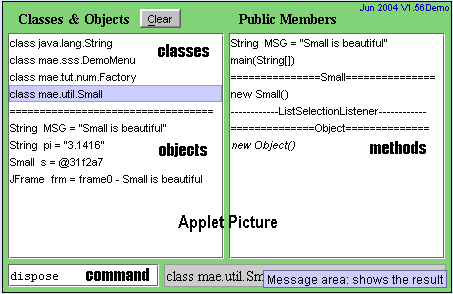

Program by
Akif Eyler from Istanbul, Turkey. Web design by Celalettin Penbe.
Last update: Oct 2004
Program by
Akif Eyler from Istanbul, Turkey. Web design by Celalettin Penbe.
Last update: Oct 2004
| SSS Home | Applet | Download | Sample Screen | User Guide | API | FAQ | | |
Small Simple Safe -- SSS |
|
|
SSS is a simple tool for handling classes and objects. You can
load Java classes and immediately build objects using public
constructors. Public methods can then be invoked by a single click.
The results are displayed in the gray message area and in Java
Console, which may be kept open.
SSS allows very quick access to public methods in any class. It has nothing to do with Java syntax. You can test a class just by clicking and without writing test code. |
|
|
You see two lists on the Applet picture at the right. One shows
classes and objects, the other shows public members of the
selected class or object. Four classes (String, DemoMenu,
Factory, Small) and four objects (MSG, pi, s, frm)
are shown in the picture.
SSS can be used in two modes:
|
 |
Program by
Akif Eyler from Istanbul, Turkey. Web design by Celalettin Penbe.
Last update: Oct 2004